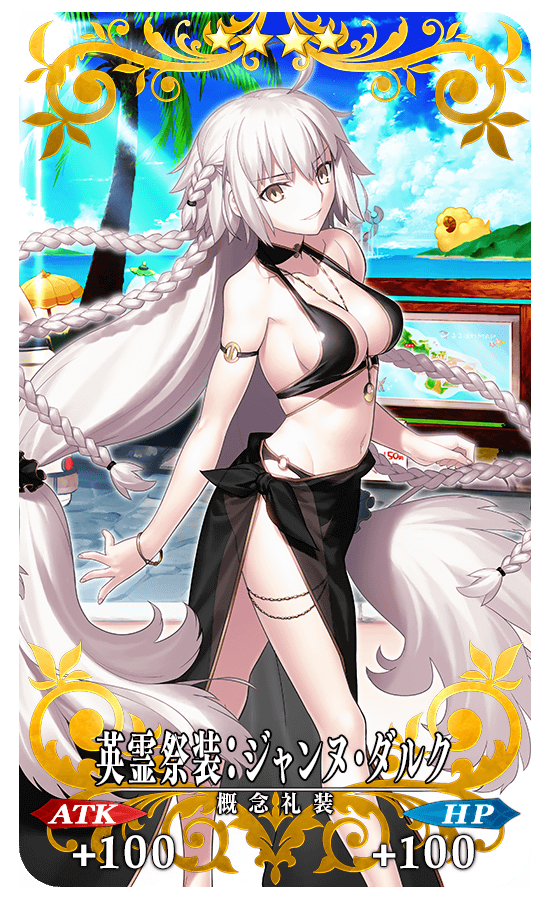
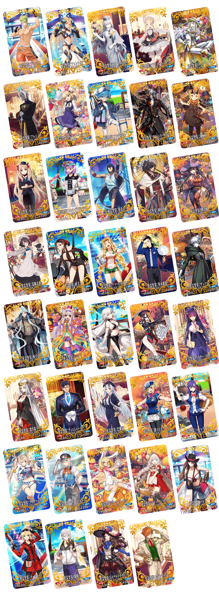
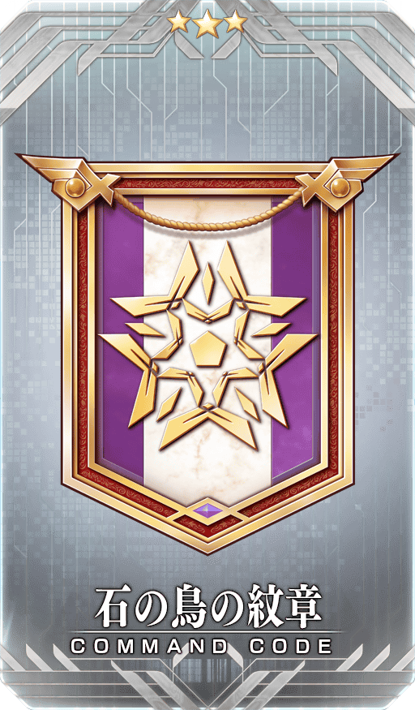
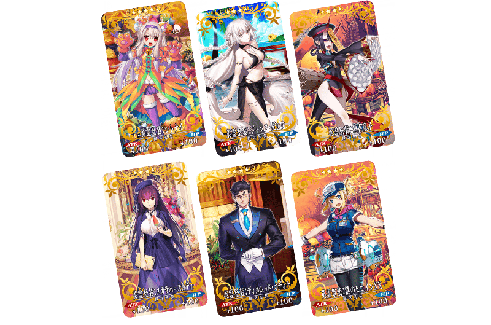
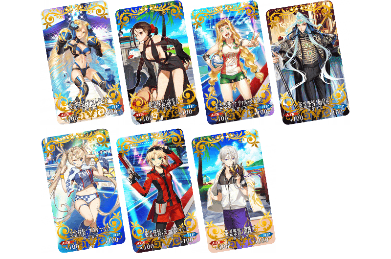

為了記念4周年，舉辦收集殘留特異點F及從亞種特異點Ⅰ到亞種特異點Ⅳ、從第2部 第1章到第2部 第4章印象的戰鬥「4周年記念回憶關卡」！
通過在迦勒底之門內出現「回憶關卡」的話，可入手期間限定概念禮裝「英靈祭裝」！
◆回憶關卡舉辦期間◆
2019年8月3日(六) 8:00～8月14日(三) 11:59
◆期間限定概念禮開放的「英靈祭裝」交換期間◆
2019年8月3日(六) 8:00～8月21日(三) 11:59
期間限定概念禮裝「英靈祭裝」的所有插圖都是新繪製！
通過特異點F的回憶關卡與第2部 第1章的回憶關卡後，各可入手1張「FGO Fes. 2019 英靈祭裝券」。
1張「FGO Fes. 2019 英靈祭裝券」可交換1張喜歡的英靈祭裝，最多能入手2張英靈祭裝！
「回憶關卡」就算通過後也不會消失，能無數次挑戰，可以變更從者和概念禮開放的的組合後再次挑戰。
◆期間限定概念禮開放的「英靈祭裝」◆
|  |
★★★★SR |
※關卡通過報酬、戰利品、御主EXP、魔術禮開放的EXP、絆點數只可在初次通過時獲得。 ※「FGO Fes. 2019 英靈祭裝券」可在達文西工房內的「活動道具交換」點擊活動橫幅，交換活動道具。 藉由通過「回憶關卡」入手的「FGO Fes. 2019 英靈祭裝券」最多2張。 ※請注意做為交換對象的期間限定概念禮裝「英靈祭裝」種類會根據主線關卡的通過狀況有所變化。
◆有關從者真名的注意◆
在2018年12月31日(二) 23:00以後新配信的主線故事及期間限定活動、一部份關卡、宣傳活動及召喚中，會顯示隱藏真名的對象從者真名。
※已經配信的主線故事、復刻活動、一部份關卡中不在此限。

※圖片為英靈祭裝名的五十音順。
◆4周年記念指令紋章◆
|  |
★★★R |
◆回憶關卡開放條件◆
| 關卡名 | 開放條件 | 通過報酬 | |
|---|---|---|---|
| 特異點F 回憶關卡 |
通過 特異點F | FGO Fes. 2019 英靈祭裝券 1張 |
|
| 亞種特異點Ⅰ 回憶關卡 |
通過 亞種特異點Ⅰ＆ 通過 特異點F 回憶關卡 |

|
呼符 1張 |
| 亞種特異點Ⅱ 回憶關卡 |
通過 亞種特異點Ⅱ＆ 通過 特異點F 回憶關卡 |
|
呼符 1張 |
| 亞種特異點Ⅲ 回憶關卡 |
通過 亞種特異點Ⅲ／亞種並行世界＆ 通過 特異點F 回憶關卡 |
|
呼符 1張 |
| 亞種特異點Ⅳ 回憶關卡 |
通過 亞種特異點Ⅳ＆ 通過 特異點F 回憶關卡 |
|
呼符 1張 |
| Lostbelt No.1 回憶關卡 |
通過 Lostbelt No.1＆ 通過 特異點F 回憶關卡 |
FGO Fes. 2019 英靈祭裝券 1張 |
|
| Lostbelt No.2 回憶關卡 |
通過 Lostbelt No.2＆ 通過 Lostbelt No.1 回憶關卡 |
|
呼符 1張 |
| Lostbelt No.3 回憶關卡 |
通過 Lostbelt No.3＆ 通過 Lostbelt No.2 回憶關卡 |
|
呼符 1張 |
| Lostbelt No.4 序幕 回憶關卡 |
通過 Lostbelt No.3＆ 通過 Lostbelt No.3 回憶關卡 |
★3(R)石の鳥の紋章 1張 | |
| Lostbelt No.4 回憶關卡 |
通過 Lostbelt No.4＆ 通過 Lostbelt No.3 回憶關卡 |
|
呼符 1張 |

| 開放條件 | 開放的「英靈祭裝」 | |
|---|---|---|
| 通過 特異點F |
・阿爾托莉亞・潘德拉剛〔Lily〕 ・茨木童子(Berserker) ・沃夫岡・阿瑪迪斯・莫札特 ・漢斯・克里斯蒂安・安徒生 ・貝德維爾 ・瑪莉・安東尼(Rider) ・瑪爾大(Ruler) ・李奧納多・達文西 | |
| 開放條件 | 開放的「英靈祭裝」 | |
|---|---|---|
| 通過 亞種特異點Ⅰ |
・新宿的Assassin(燕青) ・殺生院祈荒 | |
| 開放條件 | 開放的「英靈祭裝」 | |
|---|---|---|
| 通過 亞種特異點Ⅱ |
・海倫娜・布拉瓦茨基(Caster) ・帕爾瓦蒂 ・靠漫畫了解Berserker(保羅・班揚) | |
| 開放條件 | 開放的「英靈祭裝」 | |
|---|---|---|
| 通過 亞種特異點Ⅲ／亞種並行世界 |
・Archer・地獄(巴御前) ・刑部姬 | |

| 開放條件 | 開放的「英靈祭裝」 | |
|---|---|---|
| 通過 亞種特異點Ⅳ |
・阿比蓋爾・威廉斯 ・艾蕾修卡 ・葛飾北齋 ・シャルル=アンリ・サンソン ・羅賓漢 | |
| 開放條件 | 開放的「英靈祭裝」 | |
|---|---|---|
| 通過 Lostbelt No.1 |
・阿基里斯 ・安娜塔西亞 ・安東尼奧・薩里耶利 ・岡田以藏 ・坂本龍馬 | |

| 開放條件 | 開放的「英靈祭裝」 | |
|---|---|---|
| 通過 Lostbelt No.2 |
・志度內 ・貞德〔Alter〕(Berserker) ・酒吞童子(Caster) ・斯卡哈＝斯卡蒂 ・迪爾姆德・奧德利暗(Saber) ・謎之女主角XX | |

| 開放條件 | 開放的「英靈祭裝」 | |
|---|---|---|
| 通過 Lostbelt No.3 |
・阿斯特蕾亞 ・虞美人 ・魁札爾・科亞特爾〔森巴／聖誕〕 ・始皇帝 ・布拉達曼特 ・莫德雷德(Saber) ・蘭陵王 | |
| 開放條件 | 開放的「英靈祭裝」 | |
|---|---|---|
| 通過 Lostbelt No.4 | ・阿周那〔Alter〕 | |
關於「Fate/Grand Order Fes. 2019 ～4th Anniversary～」的詳情，請自下述橫幅確認。